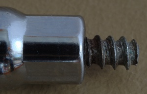
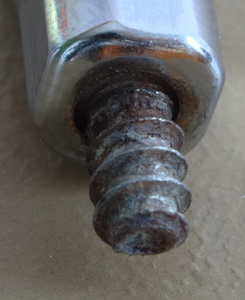
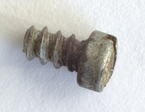

Egy 1950-es években gyártott Sheaffer Snorkel Admiral szerelését mutatom be az
oldalon. A tollat Andy's
Pens-től vettem, ahol igen nagy számban lehet régi töltőtollakat
beszerezni. A képekre klikkelve nagyobb méretben is megnézhetőek.
A toll igen érdekes töltési mechanizmussal rendelkezik, melyről bővebben
a régi töltőtollak változatos feltöltési
módjait bemutató oldalon,
vagy Richard Bindernél
olvashatunk.
Ennél a töltőtollnál kb. 20-30 évente cserélni kell a tintatartályt,
mert elöregszik a gumit és ereszti a tintát.
A szereléshez a következőkre volt szükségem:
gumi tintatartály
Ehhez a tollhoz 14-es méretű (ha minden igaz, ez a külső átmérő 1/64
hüvelyben) egyenes gumi tintatartály kell. Kapható szilikon
tintatartály is hozzá, abból állítólag 14.5-ös kell.
O-gyűrű
Itt nem igazán találtam pontos
méretleírást, általában csak annyit írnak, hogy a Snorkelhez a
"kicsi" O-gyűrű kell (a PFM-hez pedig a "nagy").
ragasztó
Mindenhol más ragasztót ajánlanak (van aki szerint a körömlakk is jó),
én óvatosságból ugyanott vettem a ragasztót (sac cement) ahol
a gumitartályt.
Ragasztó
szilikonzsír
Nem feltétlenül kötelező, de erősen ajánlott. Szilikonzsír beszerzésénél
arra kell odafigyelni, hogy 100%-os
szilikonzsír legyen, ellenkező esetben tönkreteheti a toll
alkatrészeit.
A szükséges eszközöket több helyen (mondjuk magyar helyet nem
ismerek) is be lehet szerezni, ebay-en
elég gyakran Snorkeljavító-egységcsomagokat is lehet venni.
Figyelmeztetés
Mielőtt nekiállnál szétszerelni a töltőtollad:
Az, hogy a töltőtollam szereléséről írok, nem jelenti, hogy értek
is hozzá, szóval csak saját felelősségedre állj neki.
Egy viszonylag olcsó tollnál érdemes kísérletezni, de egy drágább
tollat inkább szakértőre bíznék.
Szétszedés
A tolltest szétszedése
Először is szét kell szedni a tollat, hogy hozzáférjünk az alkatrészekhez. A szétszedés
első lépesi egyszerűek, elvileg elég a tollat a megfelelő helyeken szétcsavarozni.
A szétszedett alkatrészeket alaposan tisztítsuk meg.
Kezdjük a hátsó kupak elcsavarásával, ezzel kiengedjuk a csövet (Snorkel)
amiről a toll a nevét kapta. Továbbiakban légzőcsőként hivatkozok rá (ha valakinek van jobb magyar szava
erre, kérem írja meg!) Ezután középen szét lehet csavarni a tollat. A toll
hegyét tartalmazó részen még egy menet található, óvatosan fogjuk
meg a tollat miközben szétcsavarjuk. A toll testében egy rugó
található, elképzelhető, hogy ezt ki kell piszkálnunk.
Ha nem jön szét
Könnyen lehet, hogy hiába erőlködünk, a tollat nem sikerül szétszednünk. Egyrészt
előfordulhat, hogy a lukas tintatartály miatt a tinta (vagy a toll tisztításához használt
víz) összekente a toll belsejét, és a száradt tinta illetve a rozsda miatt nem jön szét
a toll. Másrészt az is előfordulhat, hogy a tollat az előző összeszereléskor összeragasztották.
Mivel a Sheafer Snorkel tollnak légmentesen kell záródnia ez elég gyakori.
A következő módszereket használhatjuk:
Nyers erő.
A legegyszerűbb (nem feltétlenül a legjobb) módszer. Érdemes persze figyelni arra, nehogy
tönretegyük a tollat. Létezik célszerszám
is a toll szétszedéséhez, de ilyent nem próbáltam.
Áztatás
Ha a tollat a kosz és a rozsda tartja össze, akkor az alkatrészek áztatásával (szobahőmérsekletű vizet használtam)
egyre jobban feloldhatjuk a koszt, és könnyebbé tehetjük a szerelést.
Magas hőmérséklet
Elég rémisztő, de sokan (köztük Frank Dubiel
nagyszerű könyvében) azt javasolják, hogy nyílt
láng segítségével melegítsük fel a tollat. Különösen akkor lehet erre szükség, ha a toll össze van ragasztva, hiszen
a magas hőmérséklettől megolvad a ragasztó és szétszedhetjük a tollat. Bár a tollat persze tönkre lehet tenni
ha nyílt lángot használunk, a profik szerint még mindig több az esélyünk, mintha túlzottan nagy erővel próbáljuk feszegetni.
A szétszerelésnek ebben a fázisában nem használtam nyílt lángot.
Könnyen előfordulhat, hogy a rozsdás, elakadt rugó miatt nagyon nehezen jön
szét a toll. Ha sikerül szétszednünk, akkor tisztítsuk meg a rugót.
Rozsdás rugóTisztább rugó
A tintatartály
Míg eddig a pontig akár eljuthatunk anélkül, hogy különösebben durván bánnnák
a tollal, a tintartályt tartalmazó rész szétszedésekor szinte biztos, hogy valami
draszikusabb módszerre lesz szükségünk
A tintatartály védő fém tartály
A fém tartály elején található dugót kell eltávolítanunk úgy, hogy a légzőcső ne sérüljön meg.
Mivel a régi tintatartályt akarjuk lecserélni, az nem gond,
ha a tintartály megsemmisül a szétszerelés közben.
A fém tartály végén van egy akkora luk, amin egy pálcával
(hurkapálca, fültisztító pálca) benyúlhatunk és megpróbálhatjuk
kipiszkálni a dugót (ahogy itt is láthatjuk).
Sajnos ezzel a módszerrel pont a légzőcső végét érjük el, így én nem mertem túl nagy erővel piszkálni.
Nyílt láng segítségével forrósítottam fel a fém tartályt, egészen addig, amig a dugót rögzítő
ragasztó (és a régi tintatartály is) meg nem olvadt, így már ki tudtam piszkálni a dugót. Bár az olvadt
ragasztó elég ijesztő látvány (és igen büdös), a tisztítás után kiderült, hogy a fontos alkatrészeknek nem
ártott a meleg.
Bár minden lépésnél fontos az alkatrészek megtisztítása, itt különösen az. A légzőcsőn lévő nyílás
nagyon kicsi, könnyen eldugulhat, a fémtartály belsejének a tisztítása pedig azért fontos, mert a régi gumitartály
maradványai megakadályozhatják, hogy az új tartály rendesen beférjen
(tisztítás közben kiderült, hogy a régi tartály felolvasztása nem a
legszerencsésebb megoldás, nagyon macerás volt a fémhenger tisztítása).
Dugó
Hátsó kupak
Bár nem igazán látszik, de a hátsó kupakot egy csavar rögzíti, így
a toll hátsó részének szétszedéséhez egy hosszú csavarhúzóra lesz
szükségünk. A tolltestbe benyúlva tudjuk a csavart
meglazítani, ezután a hátsó kupak már lejön, majd eltávolíthatjuk a
tolltestből a fém hengert is.
Csavar a helyénCsavar a helyénCsavar kiszerelve
Alkatrészek
A következő képen a szétszedett toll alkatrészei látszanak. Nem
feltétlenül kell a tollat ennyire szétszedni, pl. ha nincs gond a
tömítésekkel, akkor ne piszkáljuk őket.
A toll alkatrészei
Tintatartály cseréje
Ha a dugó eltávolítása során a légzőcsövet is kihúztuk, akkor
először ezt kell visszatennünk. Olyan mélyen kell visszatenni, hogy
a cső legvége éppen kilógjon a dugóból.
Ha alaposabban megnézzük a csövet, látszik,
hogy a hegy irányába mutató végén
vékony hasítékokat találunk. Úgy kell visszatennünk a csövet, hogy a
szerelés legvégén a hosszanti hasadék mutasson a hegy irányába.
A gumitartály (mivel többféle töltőtollhoz is használható) nincs
méretrevágva. A tartályt a helyére próbálva megállapíthatjuk milyen
hosszra van szükségünk, és egy egyszerű ollóval megfelelő méretre
vághatjuk. Ha pár milliméterrel rövidebb az nem gond (kicsit kevesebb
tinta fér bele), hosszabb viszont ne legyen.
A tartályt először ragasztó nélkül próbáltam a dugó szájára
illeszteni, majd miután ez sikerült odaragasztottam. A következő
képeken látszik, hogy kissé szűknek tűnik a tartály szája. Száradás után
mindenképpen próbáljuk ki, hogy légmentesen záródik-e!
Tartály a helyére ragasztvaLégzőcső, dugó, tartály
Fém tartály
Következő lépésként a fém védőtartályba kell behelyeznünk a
gumitartályt. Ugyanazt a ragasztót használtam a rögzítéshez, mint az
előző lépésben. Elegendő a védődugót beragasztani, a gumitartályt
nem kell (nem szabad) ragasztóval bekenni. Itt is ki kell próbálni száradás
után, hogy légmentesen záródik-e (nekem elsőre nem záródott).
Fém tartály
Összeszerelés
Mivel fontos a toll légmentes záródása, ezért a rossz tömítéseket is
érdemes kicserélni. A toll hegyénél illetve hátsó kupakjánál
található tömítések cseréje elég egyszerű, feltéve, hogy van pont
megfelelő méretű cserénk. Mivel ezekkel nem volt gond, most nem
cseréltem ki a tömítéseket, csak
szilikonzsírral kentem be őket alaposan mielőtt visszaszereltem őket.
A tintatartály mellett a másik idővel elromló alkatrész, a toll
hátsó testében található O-gyűrű. Akkor működik jól a gyűrű. ha a
tolltest és a benne lévő fémalkatrész elég szorosan jár, vagyis nem
lötyögnek.
A régi gyűrűt
könnyen el lehet távolítani egy csipesszel, ezután szilikonzsírral
bekenve az új gyűrű a régi helyére kell bejuttatni. Ez nekem igen
nehezen ment, de előbb-utóbb sikerült a helyére juttatni
A toll összeszerelésekor minden mozgó alkatrészt bekentem szilikonzsírral, és a
tolltest meneteit is ezzel kentem be, hogy légmentesen záródjon. Valószínűleg
még biztosabb eredményt adna ha ragasztóval kentem volna be a meneteket, de szerettem
volna ha a toll könnyen szétszedhető marad.
Kipróbálás
Ha minden jól ment, akkor megtölthetjük a tollat tintával A videó még a szerelés előtt készült.:


{kind=link}


{kind=link}
{kind=link}
{kind=link}

{kind=link}

{kind=link}


{kind=link}